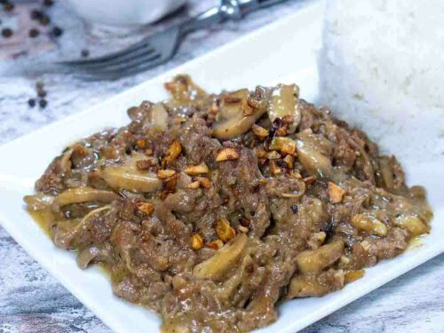

Home
Garlic Pepper Beef

Description
Garlic Pepper Beef is a savory dish made with thinly sliced beef sirloin cooked with garlics and pepper, then coated in a mushroom gravy.
This dish is rich in flavor yet easy to prepare making it a popular Filipino comfort food.
Ingredients
- Beef Sirloin
- Garlic
- Soy Sauce
- Ground Black Pepper
- Button Mushrooms
- Salt
- Cooking Oil
- Butter
- All-purpose Flour
- Garlic Powder
- Beef Broth
Steps
- Marinate for about 30 minutes the thinly sliced beef sirloin with soy sauce, and ground black pepper.
- Cook the garlic in a pan until golden brown, then remove half of the garlic and set aside for topping.
- Add the marinated meat to the pan with the remaining garlic and stir-fry until the meat is brown and properly cooked.
- In a seperate pan, make a gravy by melting a butter, add flour, then keep stirring while pouring in the beef broth. Add the sliced
mushroom, then season with black pepper and garlic powder. Simmer until the sauce thickens. Adjust the taste with salt if needed.
- Put the cooked beed in a plate, then pour on top the mushroom gravy and sprinkle the reserved crispy garlic.
- Serve.